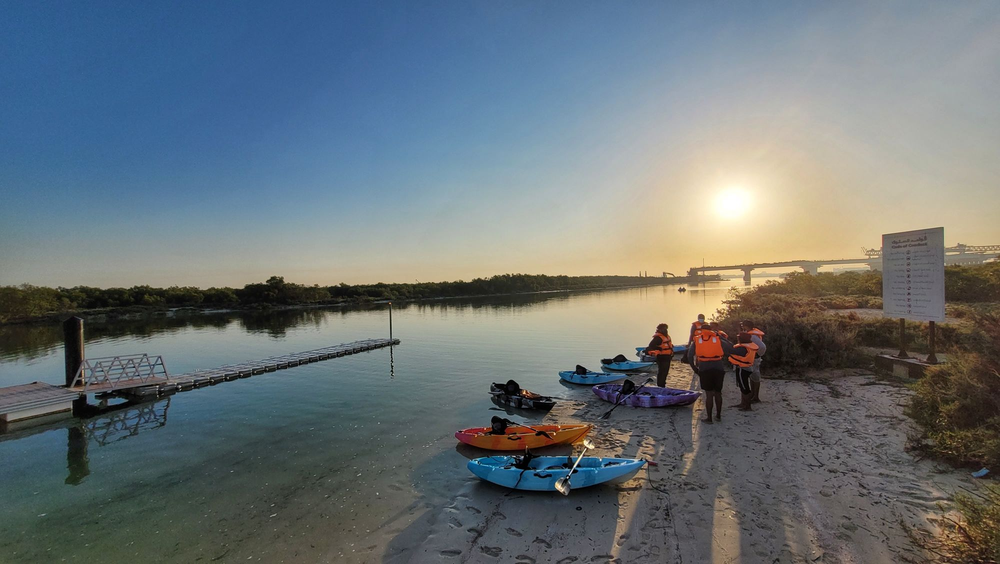

Laguna de Manialtepec
Kayak al amanecer o al atardecer
Rema entre manglares mientras la laguna despierta, o despídete del día con el cielo encendido sobre el agua.
- Amanecer
- 6:00 a 10:30 am
- Atardecer
- 4:00 a 7:30 pm
- Por persona
$2,300$1,600 MXN
Vive una experiencia increíble en contacto con la naturaleza, con opción de disfrutar la magia del amanecer o los colores del atardecer sobre la Laguna de Manialtepec.
Kayak al amanecer
Comenzamos muy temprano para remar mientras la naturaleza despierta. Navegamos tranquilamente por la laguna, rodeados de manglares, aves y paisajes naturales, disfrutando de la tranquilidad y los primeros rayos del sol.
Kayak al atardecer
Por la tarde realizamos el recorrido en kayak mientras el sol comienza a bajar. Disfrutamos de los manglares, la vegetación y la fauna de la laguna, cerrando la experiencia con un hermoso atardecer sobre el agua.
El tour incluye
- Transporte de ida y vuelta desde tu hospedaje
- Kayak por persona
- Guía durante toda la actividad
- Recorrido por la Laguna de Manialtepec
- Exploración de manglares y naturaleza
- Observación de aves y fauna de la zona